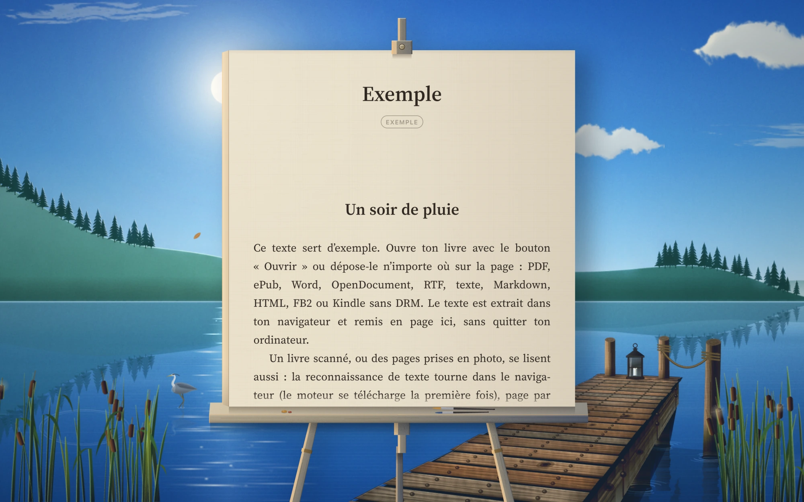
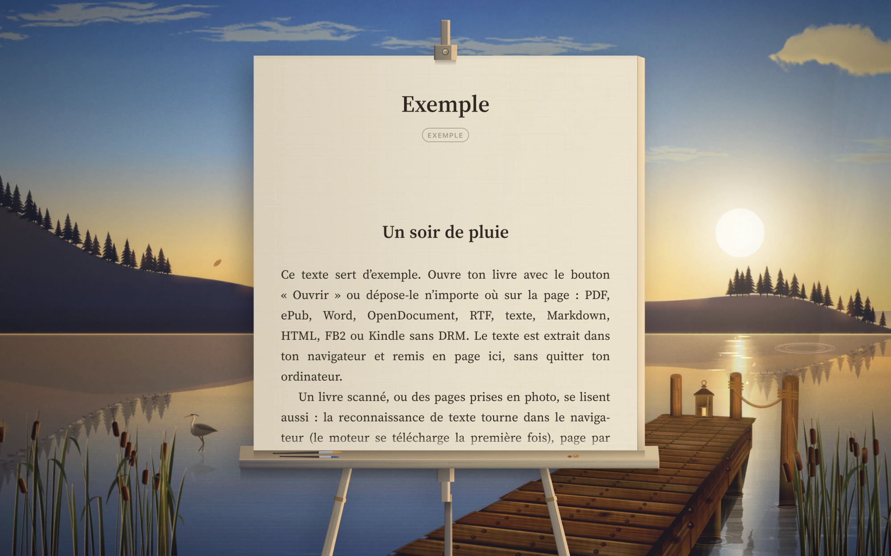
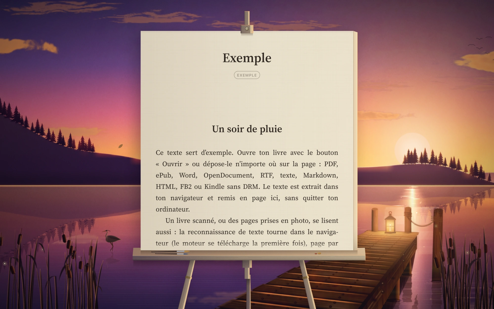
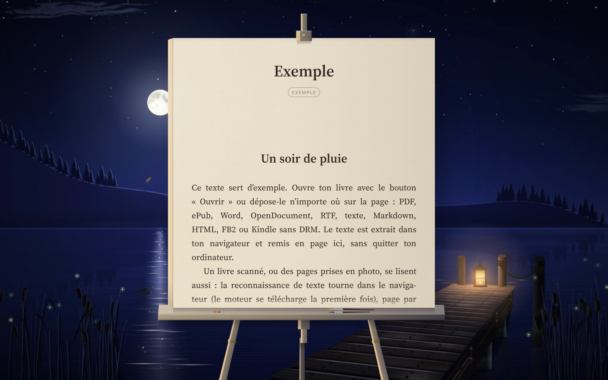
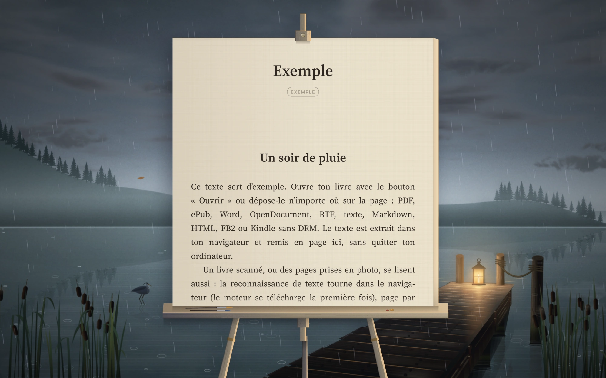
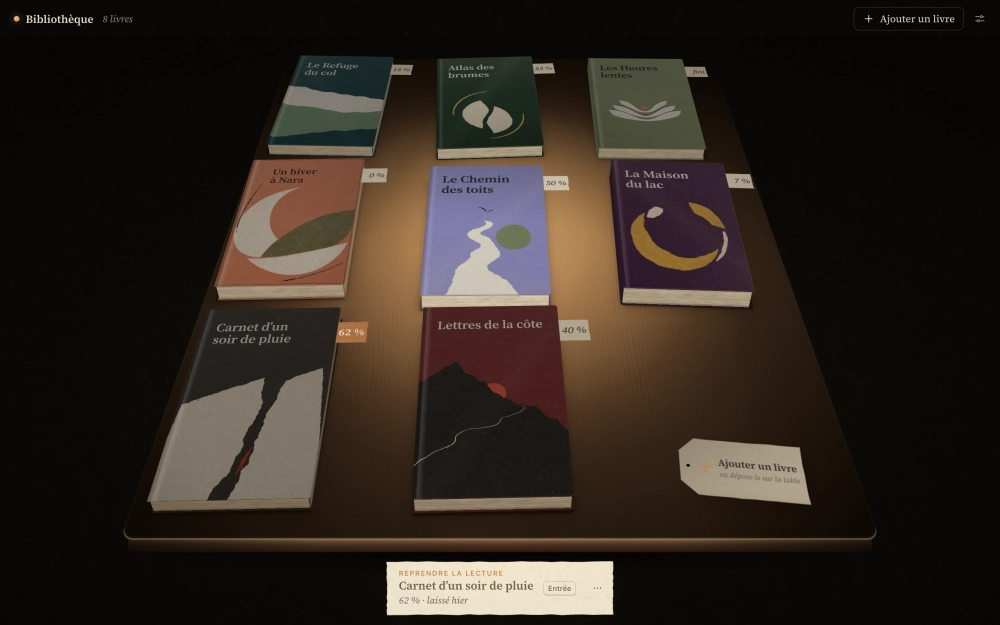
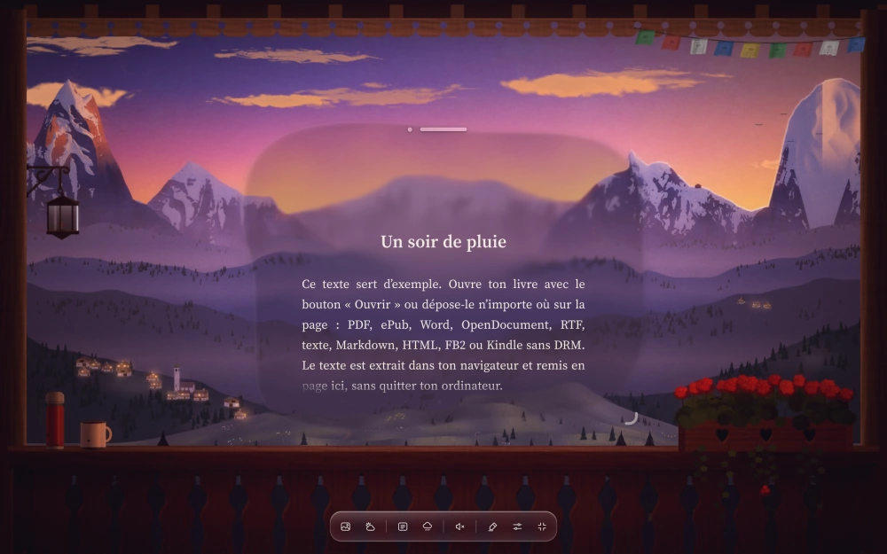
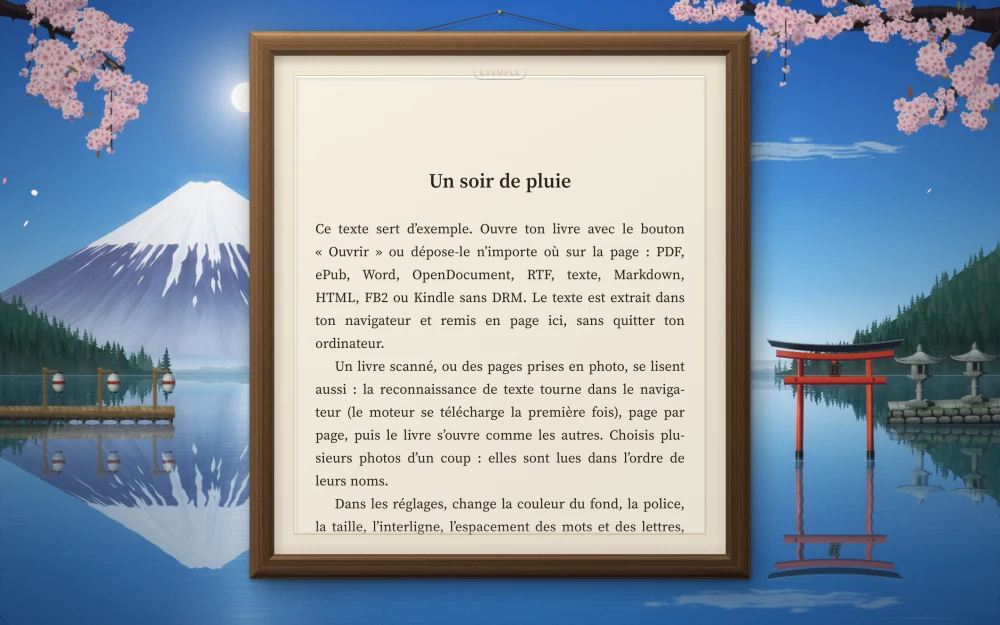
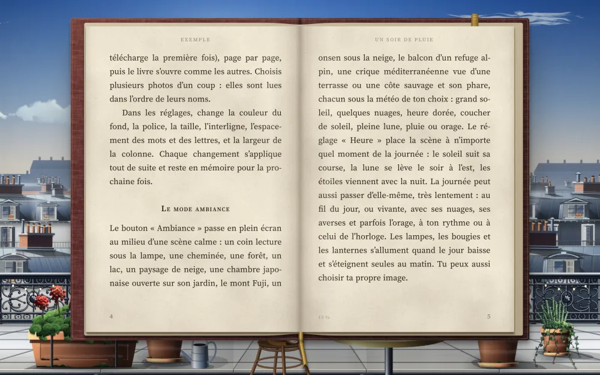
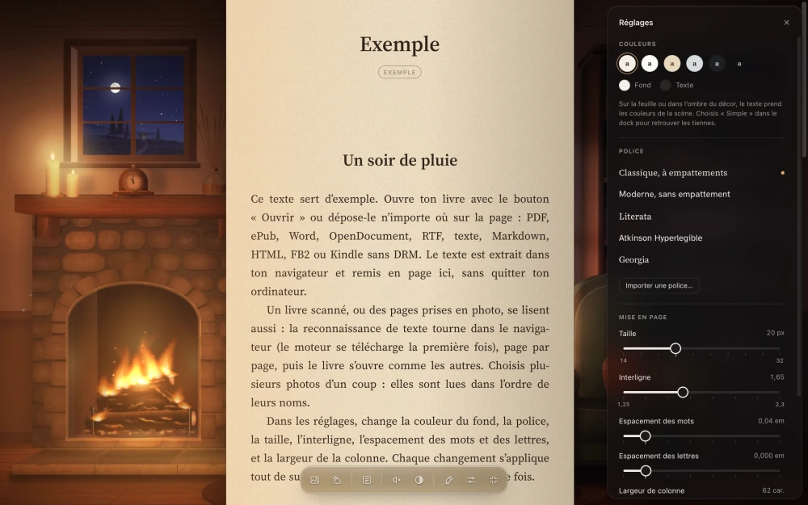

Liseuse à la lampe
Une liseuse pour lire à la lampe, devant une scène peinte qui suit l’heure et la météo.
Ouvre un PDF, un ePub ou un document Word : le texte se pose dans la scène que tu as choisie. Tout reste sur ton ordinateur.
Gratuit et libre · Windows 10 et 11 · Sans compte
Tu es sur Mac ou sous Linux ? Ouvre liseuse.html dans Chrome ou Edge.





Le lac, le texte sur un chevalet. Texte d’exemple fourni avec la liseuse.
Ce que tu as en ouvrant la liseuse.
Un livre, une scène, et rien d’autre à régler pour commencer.
Douze scènes peintes, qui suivent l’heure et la météo
Le soleil se lève et se couche, la lune monte, les nuages passent, il pleut ou il y a de l’orage. Tu fixes l’heure et le temps, ou tu laisses le ciel avancer.
Un son par scène : la pluie, le feu qui crépite, l’eau et les grillons, le vent. Tu le coupes d’un clic, tu choisis son type et son volume.
Une bibliothèque sur une table de bois
Chaque livre que tu ouvres se pose sur la table, avec sa couverture et l’endroit où tu en es. Tu reprends en un clic là où tu t’étais arrêté. Dépose un fichier n’importe où sur la page pour l’ajouter.

Le texte se pose où tu veux
Sept façons de poser le texte dans la scène. Tu le déplaces, tu l’agrandis, et tu changes de support quand tu veux.
- Feuille
- Chevalet
- Cadre
- Livre ouvert
- Livre relié
- Écran
- Bulle



Une lecture réglée à ton goût
La police, les couleurs, la taille, l’interligne, l’espacement des mots et des lettres, la largeur de la colonne, le texte justifié ou non : chaque réglage se voit tout de suite. Six jeux de couleurs (papier, sépia, nuit…), ou les tiens ; ta propre police si tu veux.
Tout est gardé : les réglages, la scène, le support, et ta place dans chaque livre.

Tes livres, dans presque tous les formats
Dépose un fichier : la liseuse en extrait le texte et le remet en page.
- ePub sans DRM
- Word
- LibreOffice
- RTF
- Texte
- Markdown
- HTML
- FB2
- Mobi
- Images et BD .cbz
Les scans, les pages photographiées et les BD en .cbz passent par la reconnaissance de texte, page par page.
Surlignages et notes
Sélectionne un passage : surligne-le, laisses-y une note, ou copie la citation avec sa référence.
Tes surlignages et tes notes se retrouvent dans le sommaire du livre, et tu les exportes en Markdown.
Chez toi, et nulle part ailleurs.
-
Sur ton ordinateur
Tes livres, tes notes et tes réglages restent sur ton ordinateur. Rien n’est envoyé.
-
Sans compte
Pas d’inscription, pas d’adresse e-mail à donner. Tu installes, tu lis.
-
Sans suivi
Pas de statistiques, pas de publicité, pas de traceur. Ce site n’en met aucun non plus.
Une seule exception : la reconnaissance de texte, pour les scans et les photos, télécharge son modèle de langue depuis Internet la première fois que tu t’en sers. Le reste fonctionne sans connexion.
Télécharge la liseuse.
Gratuite, sans compte, et libre (licence MIT). Version 1.0.0.
Pour Windows
Un installeur, comme pour n’importe quelle application. Ou une version portable, qui se lance depuis un dossier sans rien installer.
Ou la version portable (.zip).
Un seul fichier
Pas encore d’application pour Mac. En attendant, liseuse.html s’ouvre dans Chrome ou Edge, sur Mac comme sous Linux : c’est la même liseuse.
Ou les sources sur GitHub.
Windows affiche un avertissement ?
C’est normal : l’application n’est pas encore signée, et Windows prévient pour toute application qu’il ne connaît pas. Les sources sont publiques, et tout reste sur ton ordinateur.
- Dans la fenêtre « Windows a protégé votre ordinateur », clique sur Informations complémentaires.
- Puis clique sur Exécuter quand même. L’installation se lance.
Questions.
Est-ce gratuit ?
Oui, sans compte et sans publicité. Le code est libre, sous licence MIT : tu peux le lire, le modifier et le partager sur GitHub.
Faut-il Internet pour lire ?
Non. Une fois installée, la liseuse fonctionne sans connexion. Seule la reconnaissance de texte (scans et photos) a besoin d’Internet, la première fois.
Windows me met en garde. Je peux continuer ?
Oui. L’application n’est pas encore signée, alors Windows prévient. Clique sur « Informations complémentaires », puis sur « Exécuter quand même ». Télécharge-la depuis cette page ou depuis le dépôt GitHub, pas ailleurs.
Et sur Mac ou sous Linux ?
Il n’y a pas encore d’application pour Mac. En attendant, télécharge liseuse.html et ouvre-le dans Chrome ou Edge : ça marche aussi sous Linux.
Quels livres puis-je ouvrir ?
PDF, ePub, Word, LibreOffice, RTF, texte, Markdown, HTML, FB2, Mobi, et les images ou les BD en .cbz. Les fichiers protégés par un DRM ne s’ouvrent pas.
Où sont mes livres et mes notes ?
Sur ton ordinateur, dans l’application. Il n’y a pas de synchronisation : sur un autre ordinateur, tu rouvres le fichier du livre.
Puis-je mettre ma propre image en fond ?
Oui, avec « Mon image » dans le choix de la scène. Il y a aussi des fonds abstraits : lignes, relief, halo, trame, poussière.
Un problème, une idée ?
Écris-le sur la page des problèmes du dépôt GitHub.